{{ zoomAlt }}
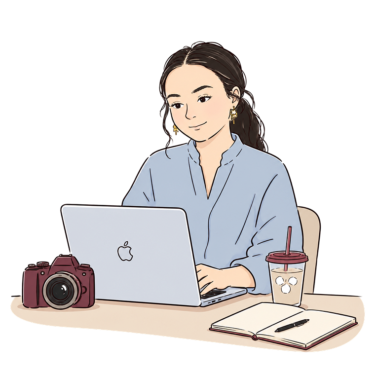
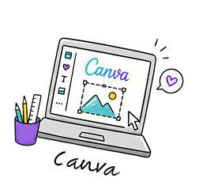
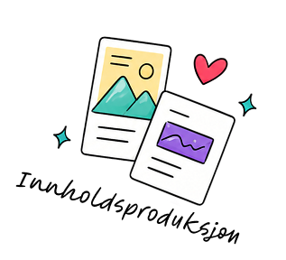
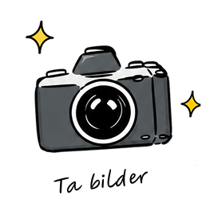
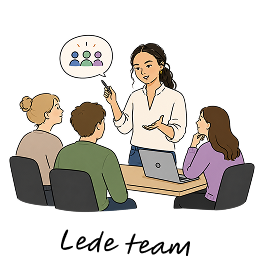
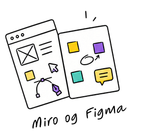
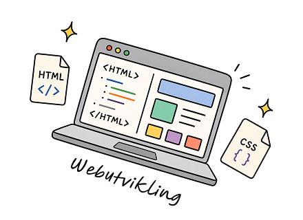
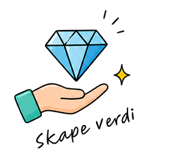
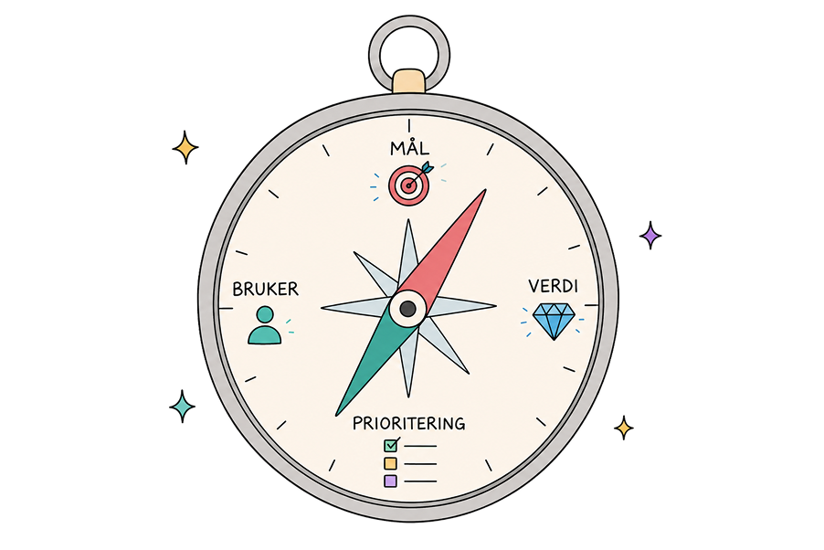
Jeg kombinerer designbakgrunn, teknologiforståelse og ledererfaring for å skape produkter som gir ekte verdi. Trives best i tverrfaglige team, der ulike perspektiver sammen skaper bedre løsninger.
litt om meg
Med én fot i design og én i teknologi har jeg bygget meg en profil som gjør meg effektiv i skjæringspunktet mellom fagfelt. Jeg forstår designerens perspektiv og snakker utviklerens språk.
Bakgrunnen som profesjonell håndballspiller har gitt meg et ekstra lag: jeg er vant til å prestere under press, jobbe i team, og ta lederansvar.
Jeg er strukturert, planlegger godt, og er glad i å fasilitere gode prosesser. Men jeg er også pragmatisk, det viktigste er at vi leverer noe som faktisk fungerer for folk.
noen verktøy jeg bruker
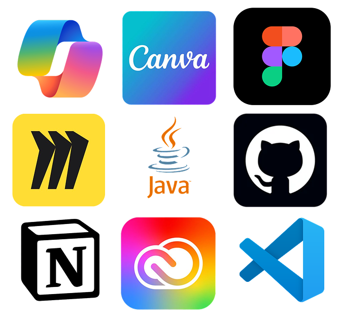
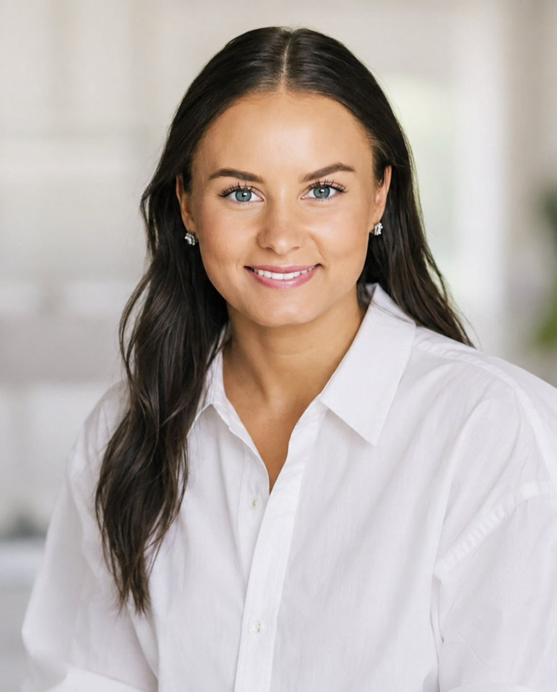
rolle
Produktleder
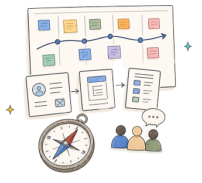
utdanning
2 x bachelor
base
Oslo
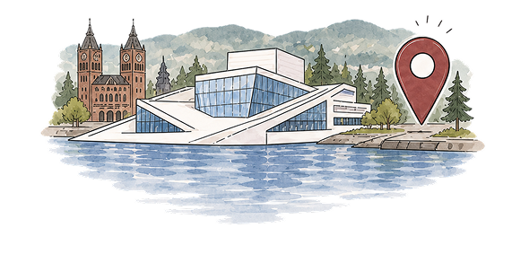
Produktleder · Politiets IT-enhet · Sommer 2026
Politiets designsystemteam manglet oversikt over hvem som brukte systemet og hvilke komponenter som ble tatt i bruk.
Vi utforsket behovet og utviklet et datadrevet dashboard. Som produktleder skapte jeg retning, struktur og fremdrift for et team på seks.
klikk på bildene for å se de større
Vi utforsket brukerbehov, brukerreise og smertepunkter, samtidig som vi etablerte trygghet, arbeidsform og en god rytme i teamet. Innsikten gjorde at vi kunne omdefinere oppgaven i en bedre retning.
ukesplan
brukerreise
team canvas
Behov sorteres etter viktighet og hyppighet. Teamet idégenererer og skisser sammen.
sortere behov
skisser
Ikke tre separate steg, men en iterativ sløyfe. Datakilder, visualiseringer og konsepter testes tidlig, deretter testes helheten
enkelt komponenter
layout skisser
testing og iterasjoner
Delene kobles sammen og testes som en helhet. Testfunnene brukes til å justere, prioritere og ferdigstille produktet.
Kunnskap, beslutninger og videre ansvar overføres slik at produktet kan forvaltes og utvikles videre.
rollen som produktleder
Som produktleder skapte jeg retning og fremdrift gjennom tydelige prioriteringer, roadmap og felles mål. Jeg fasiliterte målmøter, retroer og Monday Commitments, og deltok i innsiktsarbeid, testing og idégenerering. Vi brukte verdikjeden, løsningshypoteser, confidence score og risikohånden til å prioritere læring, redusere usikkerhet og sikre verdiskaping innenfor det juridiske handlingsrommet.
Prosjektleder · Studentprosjekt · Vår 2026
Verdistrategipodden, en faglig podkast om strategi og ledelse, hadde spredt digital tilstedeværelse uten en samlet visuell identitet eller tydelig profil i sosiale medier. Vi ble bedt om å hjelpe podkasten å nå flere.
Som prosjektleder koordinerte jeg et team gjennom hele prosessen: fra innsiktsarbeid og merkevarebygging til innholdsproduksjon og publisering på tvers av plattformer.
klikk på bildene for å se de større
idégenerering
visuell identitet
milepælsplan
publiseirngsplan
LinkTree
TikTok
Prosjektleder · Studentprosjekt · Høst 2025
Prep'N'Plate er en mobilapp som genererer personlige oppskrifter basert på det brukeren allerede har hjemme, med strekkodeskanning, bildegjenkjenning og en sparekalkulator.
Som prosjektleder i et team på fem ledet jeg prosessen fra første innsiktsarbeid til ferdige high-fidelity prototyper i Figma.
klikk på bildene for å se de større
user persona
empathy map
use case
use case
low-fidelity skisser
task flow
prototype, figma
nettside og app